Depósitos de agua en Panamá
64 disponibles hoy, originales y genéricas, cada una con su foto y su código. Elige la marca de tu carro:
- Garantía de 3 días
- Foto real de cada pieza
- Efectivo, Yappy o ACH
- Lunes a sábado, 8:00 a. m. a 5:00 p. m.
Depósitos de agua para Toyota 20
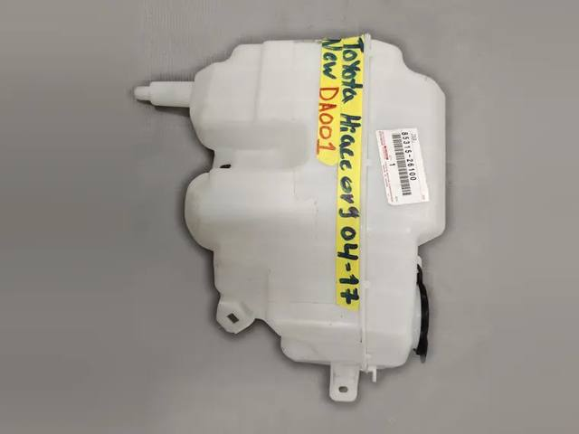
DA001Toyota Hiace2004-17 · original nuevo DA042Toyota Yaris2017-22
DA042Toyota Yaris2017-22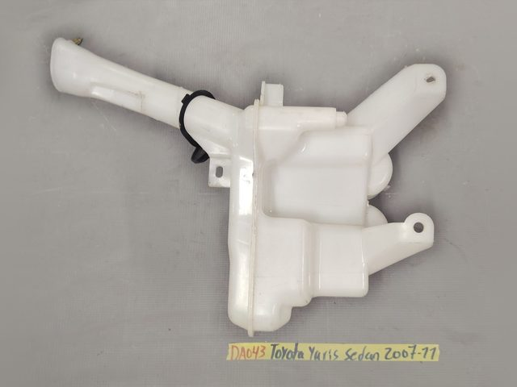
DA043Toyota Yaris Sedan2007-11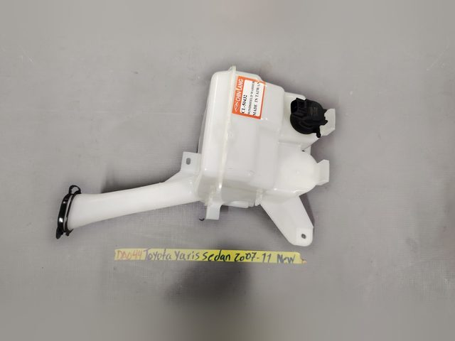
DA044Toyota Yaris Sedan2007-11 · nuevo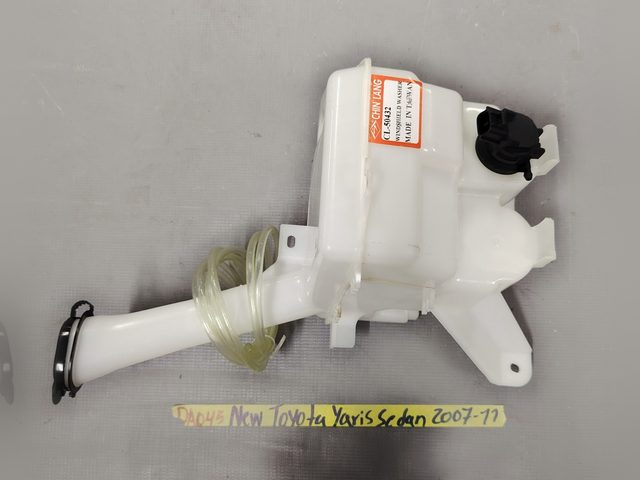
DA045Toyota Yaris Sedan2007-11 · nuevo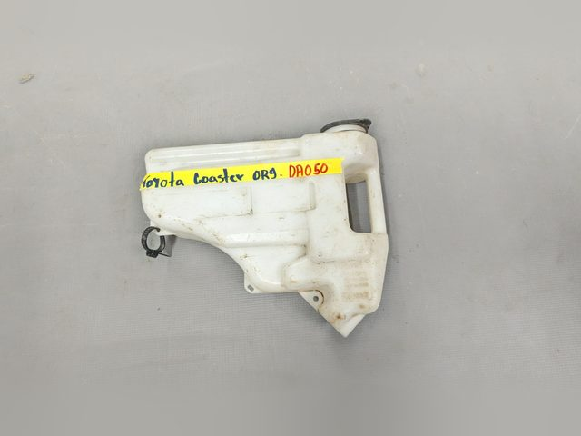
DA050Toyota Coasteroriginal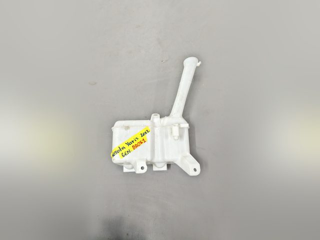
DA051Toyota Yaris2012 · genérico DA052Toyota Rush2017-24 · original
DA052Toyota Rush2017-24 · original DA055Toyota Yaris Sedan2007-11 · nuevo
DA055Toyota Yaris Sedan2007-11 · nuevo DA057Toyota Yaris Sedan2007-11 · nuevo
DA057Toyota Yaris Sedan2007-11 · nuevo DA058Toyota Yaris2017 · original
DA058Toyota Yaris2017 · original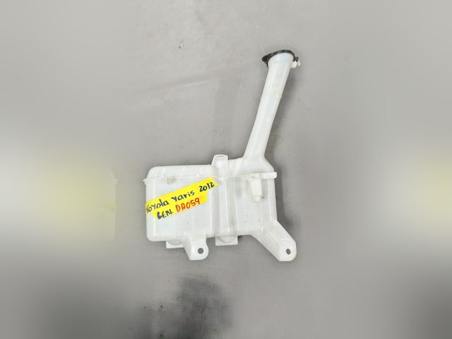
DA059Toyota Yaris2012 · genérico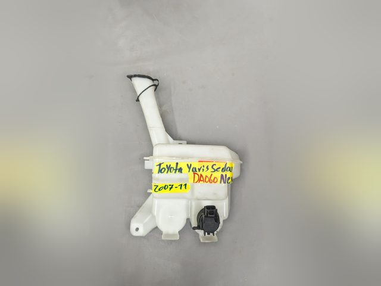
DA060Toyota Yaris Sedan2007-11 · nuevo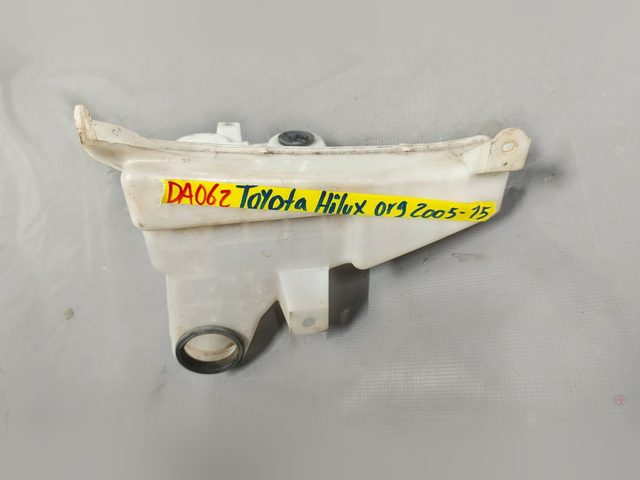
DA062Toyota Hilux2005-15 · original DA015Toyota Hilux Revo / Fortuner / Innova2016-23
DA015Toyota Hilux Revo / Fortuner / Innova2016-23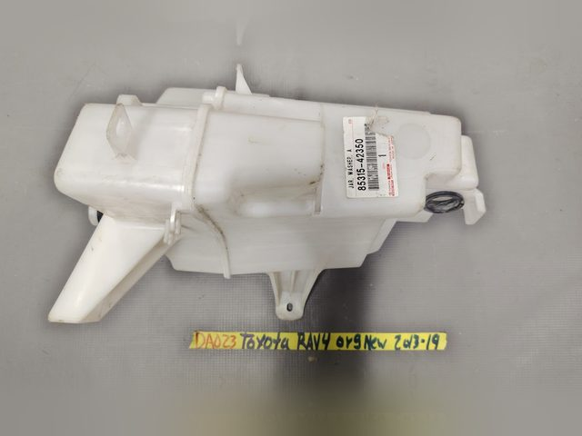
DA023Toyota RAV42013-19 · original nuevo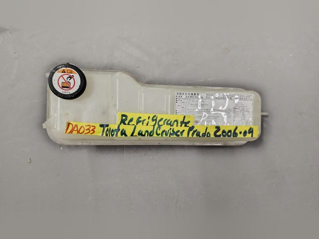
DA033Toyota Land Cruiser Prado2006-09 DA035Toyota Fortuner / Hilux2015-25
DA035Toyota Fortuner / Hilux2015-25 DA037Toyota Hilux2005-15
DA037Toyota Hilux2005-15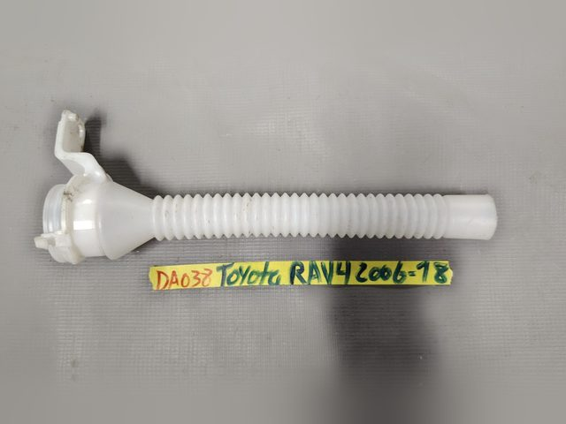
DA038Toyota RAV42006-18Depósitos de agua para KIA 14
 DA002KIA Cerato2014-18 · original
DA002KIA Cerato2014-18 · original DA004KIA Rio Hatchback2017-20 · original
DA004KIA Rio Hatchback2017-20 · original DA006KIA Picanto2011-19 · original
DA006KIA Picanto2011-19 · original DA007KIA Soluto2020-26 · original
DA007KIA Soluto2020-26 · original DA009KIA Rio Hatchback2017-20 · original nuevo
DA009KIA Rio Hatchback2017-20 · original nuevo DA011KIA Rio2011-15 · original nuevo
DA011KIA Rio2011-15 · original nuevo DA012KIA Picanto2011-15 · original
DA012KIA Picanto2011-15 · original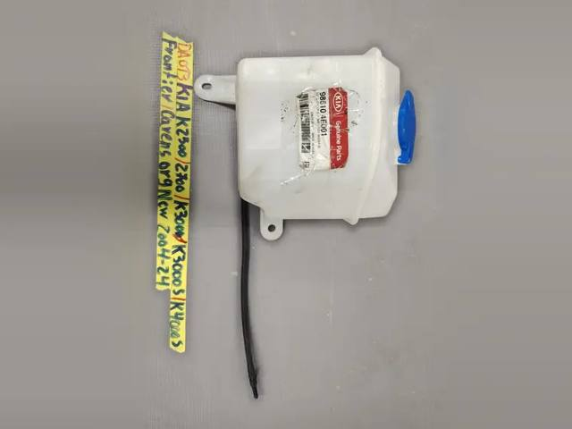
DA013KIA K2500 / K2700 / K3000 / K3000S / K4000S2004-24 · original nuevo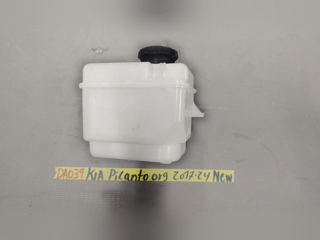
DA039KIA Picanto2017-24 · original nuevo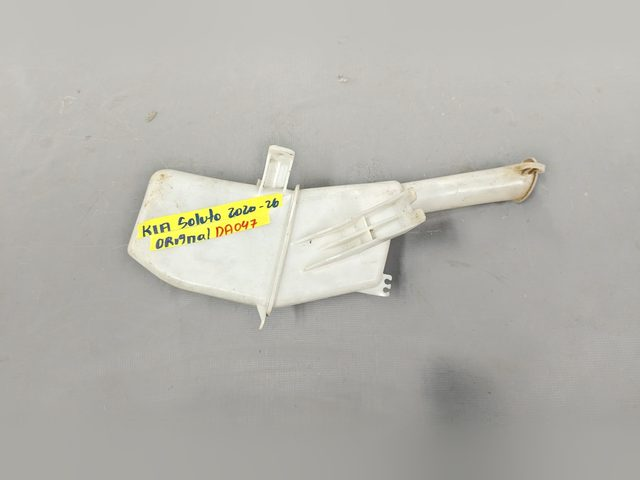
DA047KIA Soluto2020-26 · original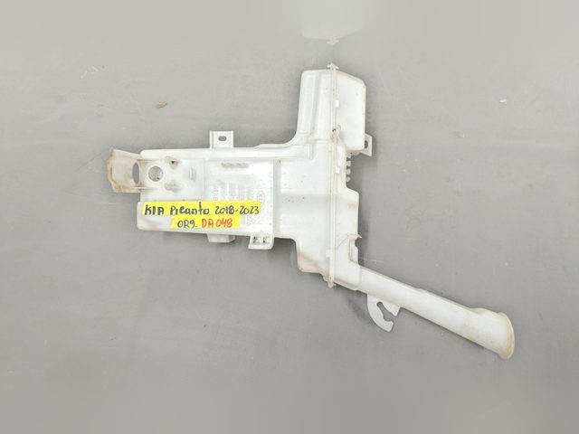
DA048KIA Picanto2018-23 · original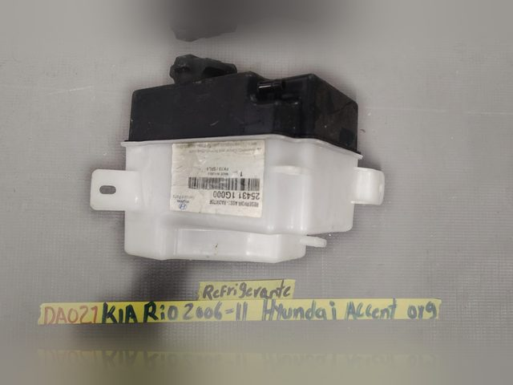
DA021KIA Rio / Hyundai Accent2006-11 · original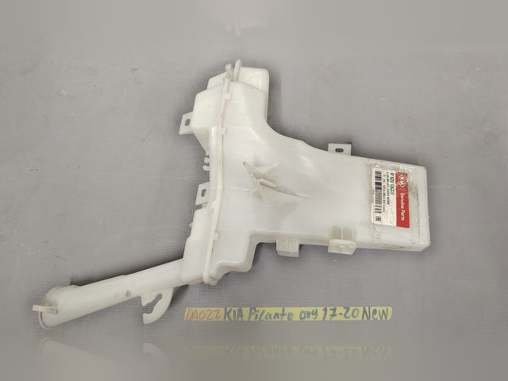
DA022KIA Picanto2017-20 · original nuevo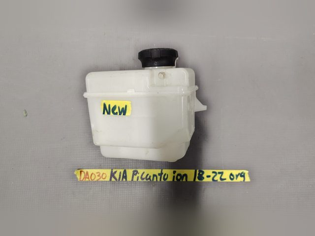
DA030KIA Picanto Ion2018-22 · original nuevoDepósitos de agua para Hyundai 8
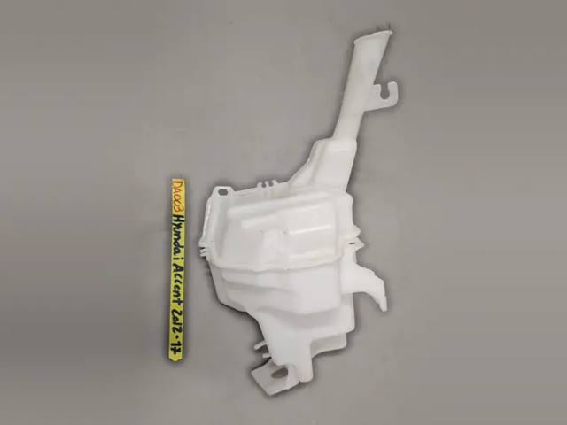
DA003Hyundai Accent2012-17 DA005Hyundai Grand i202017-20 · original
DA005Hyundai Grand i202017-20 · original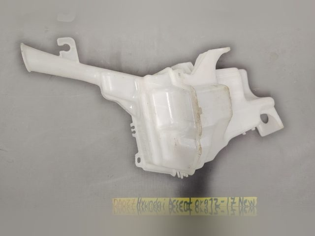
DA027Hyundai Accent2012-17 · original nuevo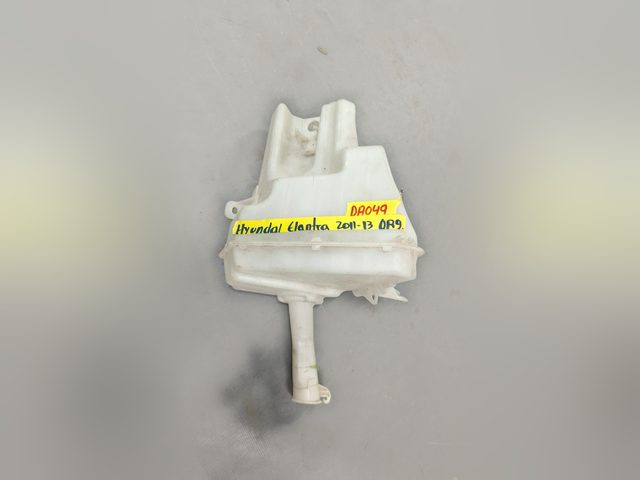
DA049Hyundai Elantra2011-13 · originalDA061Hyundai Elantra2011-19 · original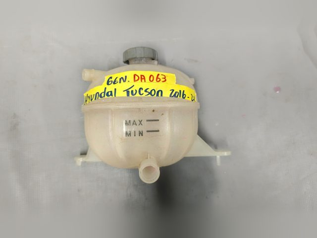
DA063Hyundai Tucson2016-21 · genérico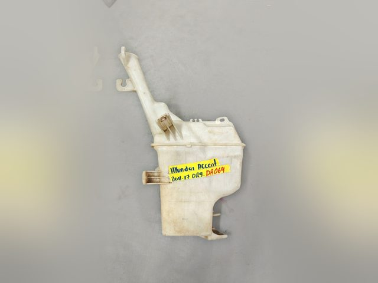
DA064Hyundai Accent2011-17 · original DA025Hyundai Santa FE2013-18 · original
DA025Hyundai Santa FE2013-18 · originalDepósitos de agua para GAC 5
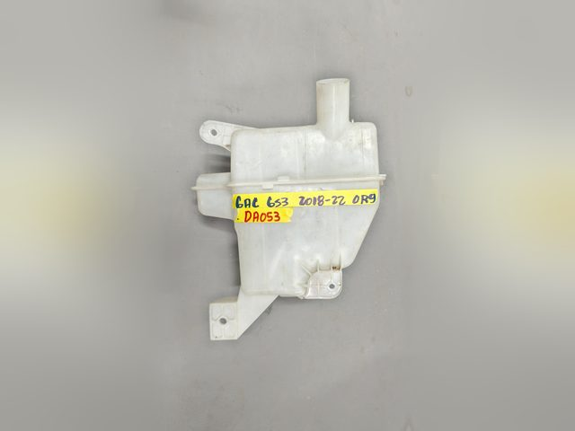
DA053GAC GS32018-22 · original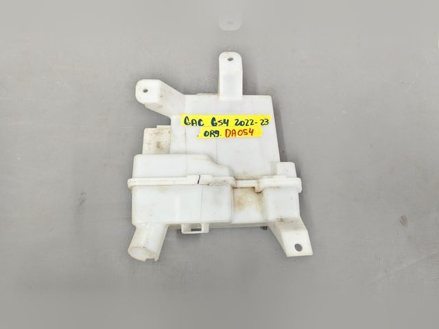
DA054GAC GS42022-23 · original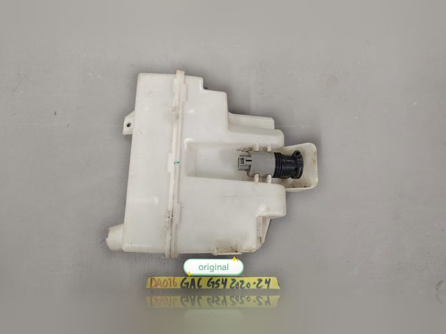
DA016GAC GS42020-24 · original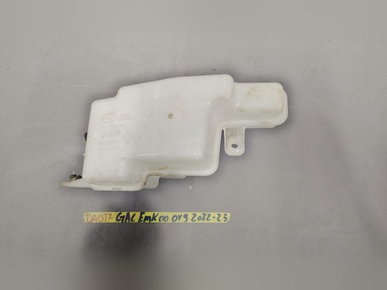
DA017GAC Emkoo2022-25 · original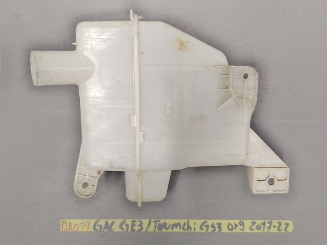
DA019GAC GE3 / Trumpchi GS32017-22 · originalDepósitos de agua para Suzuki 3
 DA046Suzuki Ciaz2016-20 · original
DA046Suzuki Ciaz2016-20 · original DA065Suzuki Swift2019-22 · original
DA065Suzuki Swift2019-22 · original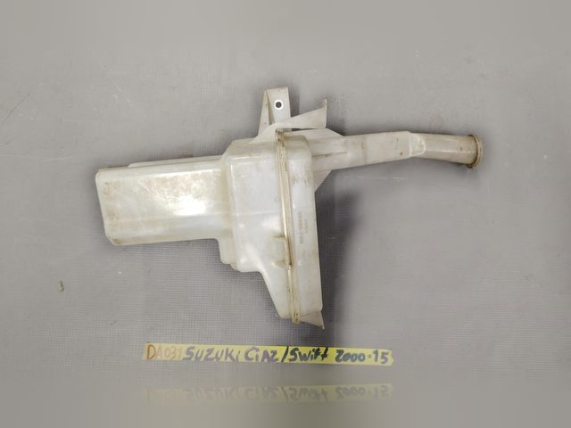
DA031Suzuki Ciaz / Swift2000-15Depósitos de agua para Nissan 3
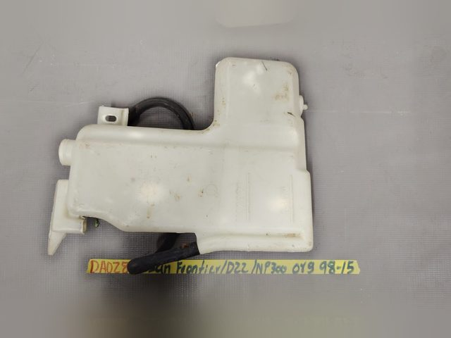
DA028Nissan Frontier D22 / NP3001998-15 · original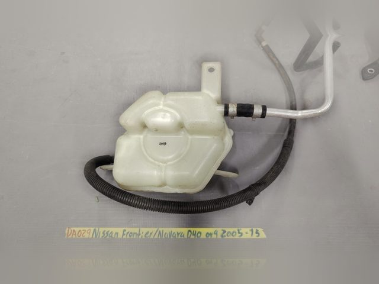
DA029Nissan Frontier / Navara D402005-15 · original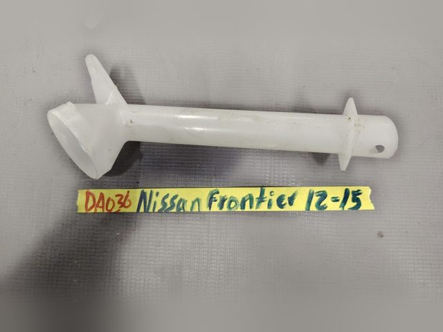
DA036Nissan Frontier2012-15Depósitos de agua para Ford 2
 DA008Ford Explorer Limited2020-24 · original nuevo
DA008Ford Explorer Limited2020-24 · original nuevo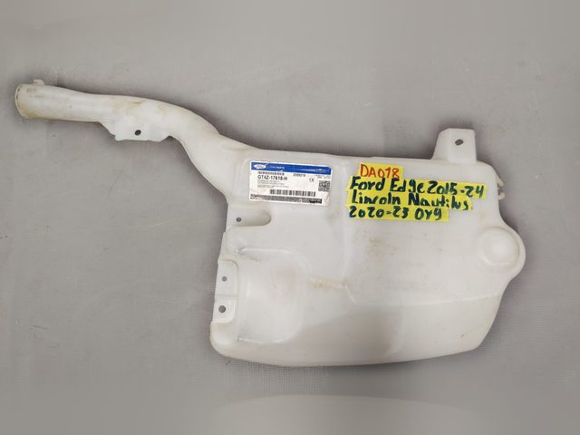
DA018Ford Edge / Lincoln Nautilus2015-24 · originalDepósitos de agua para Honda 2
Depósitos de agua para Chevrolet 2
Depósitos de agua para Changan 1
Depósitos de agua para Hino 1
Depósitos de agua para MG 1
Depósitos de agua para Geely 1
Depósitos de agua para Mitsubishi 1
 DA032Mitsubishi L200
DA032Mitsubishi L200Otros tipos de pieza
Parrillas 340Faros y lámparas delanteras 265Defensas traseras 263Defensas delanteras 221Lámparas traseras 210Flares 184Covers de halógena 167Guardafangos 143Halógenas y faros antiniebla 114Puertas 99Cubrepolvos 93Refuerzos delanteros 79Capós 69Tapas de baúl 69Marcos de radiador 58Retrovisores 57Estribos y rolling boards 55Defensas traseras inferiores 55Defensas delanteras inferiores 54Tapas superiores de radiador 49Vidrios 47Molduras de puerta 47Molduras traseras 44Protectores inferiores 29Refuerzos traseros 28Guardafangos traseros 22Copas 20Extensiones de defensa trasera 18Ventiladores 13Molduras delanteras 13Extensiones de defensa delantera 8Tableros 6Accesorios nuevos 5Soportes de defensa 2Discos de freno 1Covers de vagón (bedliner) 1